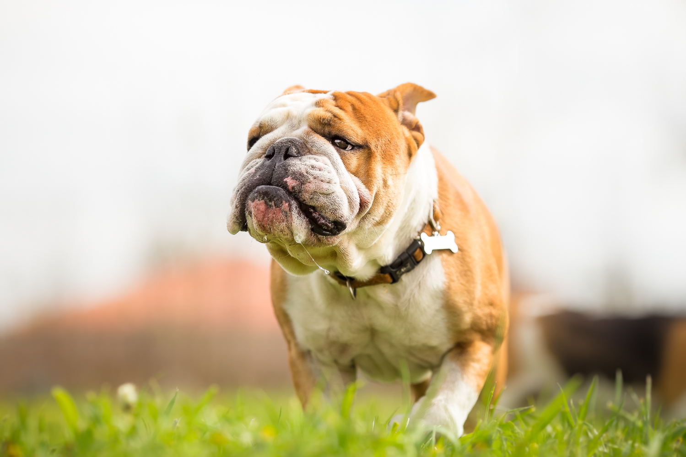
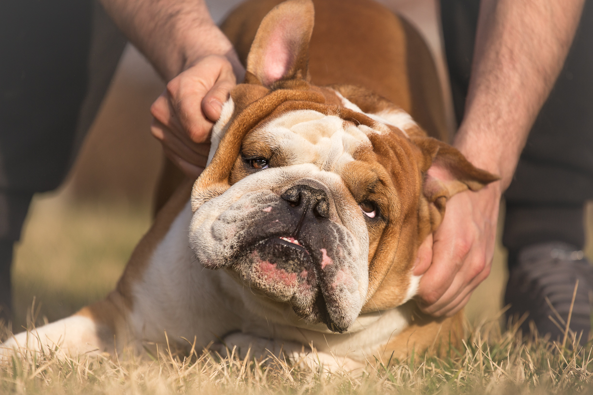

Buldog

Engleski buldog vodi poreklo od epirskog molosa i smatra se da su ga na teritoriju Velike Britanije, gde je rasa nastala, doneli feničanski moreplovci. U pisanim dokumentima prvi put se spominje 1500. godine. Tadašnji buldog u velikoj meri razlikovao se od današnjeg po veličini, dužini nogu i pre svega naravi. Istorija nastanka ove rase pasa prilično je tužna i surova i svakako se ne može reći da ide u prilog ljudskoj humanosti. Prvobitno, buldozi su korišćeni za borbe sa bikovima, po čemu su i dobili naziv. Više pasa bilo bi pušteno u arenu i pobednik krvave igre bio je pas koji bi biku naneo smrtonosni ujed. Smatralo se da je meso bika ubijenog na taj način mnogo ukusnije. Neki podaci ukazuju da su pored borbi sa bikovima, organizovane i borbe sa medvedima. 1835. godine Britanski parlament Dekretom je zabranio ovaj surovi način zabave i u to vreme smatralo se da će buldog kao rasa izumreti budući da je izgubio svrhu. Na sreću, to se nije desilo. Ljubitelji ove rase nastavili su sa uzgojem buldoga i nastojeći da eliminišu agresivnost iz njihove naravi vršili ukrštanje sa mopsom. Rezultat ukrštanja je engleski buldog kakvog danas poznajemo. 1859. godine prvi put je zabeleženo učešće buldoga na izložbama, a 1861. buldog po imenu King Dik pobedio je na izložbi u Birmingemu. Standard rase postavljen je 1878. godine, a nakon širenja u SAD ovaj standard je uz mnogo nesuglasica revidiran i konačno ustanovljen 1896. godine i kao takav važi do danas. U današnje vreme, zbog svog simpatičnog „klovnovskog“ izgleda i temperamenta, buldog je česta maskota mnogih organizacija, od mornarice SAD do zaštitnog znaka škola i univerziteta, poput Hendsom Dena buldoga maskote univerziteta Jejl. O popularnosti engleskog buldoga danas govori i činjenica da je na google pretraživaču jedna od najtraženijih rasa pasa već niz godina.
Izgled
Niz pojedinačno nesrazmernih osobina koje karakterišu izgled engleskog buldoga oklopljen je u iznad svega simpatičnu i krajnje srazmernu celinu. Engleski buldog je pas srednje veličine, mišićav, kratkih nogu, širokog grudnog koša i prilično kratkog repa. Glava je široka i krupna i iz profila podseća na glavu žabe. Uši su male i blago zabačene unazad, oči okrugle, uvek tamne boje smeštene nisko na licu. Ispod širokog nosa, nabijenog prema očima nalaze se takođe široke i opuštene usne. Snažan vrat i kompaktno telo pokriveni su naborima usled viška kože koju poseduje. Leđa po standardu moraju posedovati karakterističan luk u nivou slabina. Dlaka je kratka jednobojna, uobičajeno tamno narandžasta ili prošarana bela sa narandžastim, mada su priznate i druge boje poput čisto bele, smeđe i tigraste. Težina buldoga je prilično velika u odnosu na njegovu veličinu, koja prosečno iznosi do 31 do 40cm kada su u pitanju mužjaci i 31 do 38cm kada su u pitanju ženke. Prosečna težina mužjaka kreće se od 23 do 25kg, dok su ženke nešto sitnije, oko 23kg.
Narav
Izuzetno inteligentan i druželjubiv, engleski buldog je pas koji će se uklopiti u različite igre i aktivnosti. Ubraja se u najvernije rase pasa koji se izuzetno vezuje za svog vlasnika i živi sa njim u kući, čak i ako postoji dvorište. Ukoliko puno vremena provodi sam biće veoma tužan i u takvim slučajevima dobro je obezbediti mu društvo drugog psa. Budući da se ubraja u mirne rase pogodan je i za vlasnike koji nabavljaju prvog psa. Svestan je da zavisi od svog vlasnika čijim se zahtevima rado povinuje ukoliko je hijerarhija uspostavljena na vreme. Brzo uči i lak je za obuku, prilikom koje je potrebno biti staložen i opušten, jer će veoma brzo prepoznati nervozu i nesigurnost. Takođe će se truditi da zadatke izvrši na „svoj način“ budući da je ovo superljubimac koji uvek „misli svojom glavom“.
Odličan i požrtvovan čuvar, veoma je sposoban da pokaže svoju snagu, ali se neće pošto poto truditi u tome. Ukoliko porodici ne preti opasnost, držaće se na odstojanju i naizgled pasivno pratiti situaciju. Strpljiv je, umiljat i veoma se rado druži sa decom. Retko će biti agresivan, pogotovo ukoliko je dresiran od malena. U tom periodu potrebno je naučiti ga i da ne skače na ljude kada se raduje, jer je veoma težak kad poraste. Retko laje, ali zbog svoje kratke njuške ispušta niz drugih zvukova, poput hrkanja dok spava, groktanja i krkljanja. Dve karakterne osobine ove rase – tvrdoglavost i upornost, dovešće ga u niz komičnih situacija u kući. Kada jednom nešto naumi, trudiće se da to ostvari po svaku cenu, a u trenutku kada nema ništa na umu poprimiće osobine pravog lenjivca. Ima izraženu potrebu za žvakanjem, te je potrebno obezbediti mu igračke i naučiti ga da ne žvaće cipele i druge stvari u kući. Nije mnogo aktivan, retko trči i teško da ćete videti vlasnika da juri za engleskim buldogom, ali se može desiti da ga iz duže šetnje vlasnik mora vući natrag ili čak nositi do kuće. Njegov karakterističan opušteni hod odaje stabilnost i sigurnost. Ne voli da pliva, a ako ipak zapliva veća je verovatnoća da zbog težine i viška kože potone nego da se održi na površini vode.
Nega i zdravlje
Kratka dlaka engleskog buldoga laka je za održavanje. Redovno četkanje obezbeđuje joj sjaj, kupanje je retko potrebno. Kod nege engleskog buldoga najvažnije je redovno čišćenje nabora na koži, kako ne bi došlo do infekcije. Zbog kratke njuške disanje je otežano, što smanjuje mogućnost toplotne regulacije i ograničava fizičku aktivnost. Oči takođe znaju biti osetljive i podložne raznim oboljenjima koje se leče najčešće kapima ali i drugim metodama. U istoriji bolesti ove rase pojavljuje se i diplazija kukova i kolena. Teško podnosi vrućinu i pre ćete ga videti da se valja po snegu, nego da leži na suncu. Iako nije probirljiv, poželjno je hraniti ga isključivo hranom za pse – što će smanjiti količinu zvukova koje proizvodi ispuštanjem gasova. Sklon je gojenju i iako neće uvek biti raspoložen za fizičke aktivnosti, potrebno je podsticati ga, ali ne na preteranu već umerenu aktivnost. Uzgajanje ove rase je prilično teško, budući da zbog veličine glave štenci uglavnom dolaze na svet pomoću carskog reza. Ubraja se u prilično osetljive rase pasa. Prosečan životni vek engleskog buldoga je između osam i deset godina.
